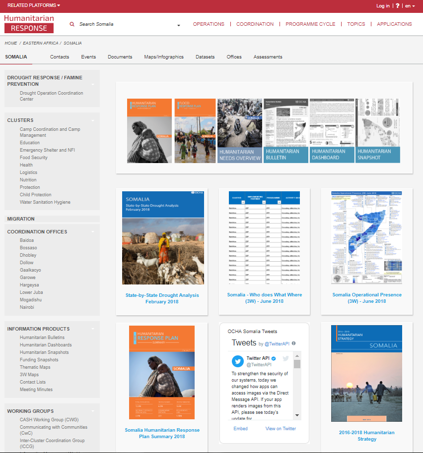

more_vert
Download entire page
As PDF
Somalia 2018
Humanitarian response plan | Rev: 1.0

(c) TGomo - OCHA
Humanitarian profile by cluster
| Cluster | In need | Targeted (%) | Target |
|---|---|---|---|
| Camp Coordination and Camp Management (CCCM) | 2,100,000 | 1,700,000 | |
| Education | 2,400,000 | 396,000 | |
| Food Security | 6,200,000 | 5,400,000 | |
| Health | 5,500,000 | 4,300,000 | |
| Multi-Sectoral Assistance | 135,800 | 135,800 | |
| Nutrition | 1,400,000 | 1,200,000 | |
| Protection | 3,600,000 | 1,800,000 | |
| Shelter and NFIs | 1,500,000 | 1,300,000 | |
| Water, Sanitation and Hygiene | 4,300,000 | 3,800,000 |
more_vert
Download
As PNG
As XLSX
Strategic Objectives
1
Life-saving: Provide life-saving and life-sustaining integrated, multi-sectoral assistance to reduce acute humanitarian needs and excess mortality among the most vulnerable people.2
Nutrition: Reduce emergency levels of acute malnutrition through integrated multi-sectorial response. Enhance integration of Nutrition, WASH, Health and Food Security programmes to strengthen nutrition-sensitive programming3
Protection: Support provision of protection services to affected communities, including in hard-to-reach areas, and in IDP sites, targeting the most vulnerable, especially those at risk of exclusion.4
Resilience: Support the protection and restoration of livelihoods, promote access to basic services to build resilience to recurrent shocks, and catalyze more sustainable solutions for those affected, including marginalized communities
more_vert
Download
As PNG
Programme cycle documents

Cluster overview
| Cluster | Objectives | Partners | Projects | Funding | Funding coverage | Required |
|---|---|---|---|---|---|---|
| Camp Coordination and Camp Management (CCCM) | 30 | 14 | 16 | $6.9m | $41.7m | |
| Education | 13 | 27 | 27 | $20.6m | $51.3m | |
| Enabling Programmes | 4 | 8 | 11 | $13m | $26.2m | |
| Food Security | 33 | 87 | 90 | $371.1m | $631.7m | |
| Health | 13 | 67 | 69 | $36.5m | $124.4m | |
| Logistics | 3 | 2 | 2 | $7m | $9.8m | |
| Multi-Sectoral Assistance | 0 | 9 | 9 | $39.5m | $106.1m | |
| Nutrition | 10 | 69 | 70 | $84.9m | $253.8m | |
| Protection | 37 | 67 | 77 | $20.3m | $98m | |
| Shelter and NFIs | 16 | 24 | 24 | $19m | $70.1m | |
| Water, Sanitation and Hygiene | 20 | 77 | 77 | $41.1m | $129.3m |
more_vert
Download
As PNG
As XLSX